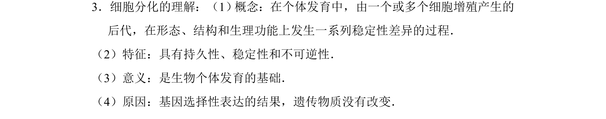
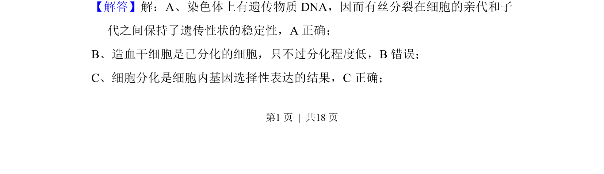
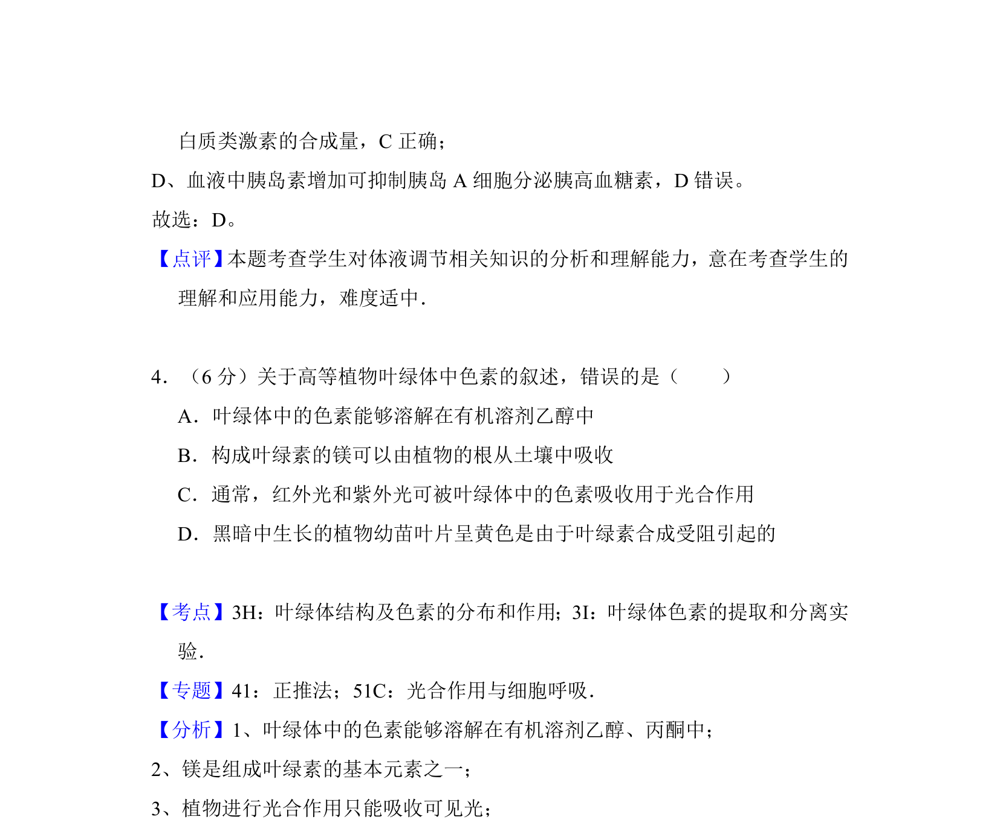

考点：细胞分化 基因选择性表达 有丝分裂

该题考查细胞分化的概念、特征及与有丝分裂的对比，涉及遗传物质稳定性与基因表达。


📄 原 PDF 第 4 页：
素材/真题/吉林/2008-2024·（吉林）生物高考真题/2016年高考生物试卷（新课标Ⅱ）（解析卷）.pdf
3．（6分）下列关于动物激素的叙述，错误的是（ ） A．机体内、外环境的变化可影响激素的分泌 B．切除动物垂体后，血液中生长激素的浓度下降 C．通过对转录的调节可影响蛋白质类激素的合成量 D．血液中胰岛素增加可促进胰岛B细胞分泌胰高血糖素
【考点】DB：动物激素的调节．菁优网版权所有 【专题】41：正推法；532：神经调节与体液调节． 【分析】本题考查了高等动物神经调节和体液调节的相关知识． 神经调节和体液调节都是机体调节生命活动的基本方式， 激素调节是体液调节的 主要内容．神经调节和体液调节既互相联系，又互相影响 【解答】解：A、激素的含量处于动态平衡中，激素的分泌量可随内、外环境的 改变而变化，A正确； B、动物的生长激素是由垂体分泌的，切除动物垂体后，血液中生长激素的浓度 下降，B正确； C、蛋白质类激素的合成需要通过转录和翻译过程，通过对转录的调节可影响蛋